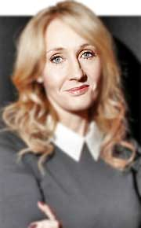

Harry Potter
J. K. Rowling
J.K. Rowling, reconocida por ser la autora de la exitosa serie de libros de Harry Potter, ha acumulado una serie de logros notables en su carrera. Además de los múltiples premios literarios que ha recibido, Rowling es conocida por su activismo en temas como la igualdad de género y los derechos de los niños, así como por su generosidad filantrópica, donando una parte considerable de su fortuna a diversas causas benéficas. A nivel empresarial, fundó la compañía de entretenimiento Wizarding World para expandir el universo de Harry Potter a través de parques temáticos, productos de consumo y experiencias digitales. Además, bajo el seudónimo de Robert Galbraith, ha incursionado con éxito en el género policiaco, demostrando su versatilidad como escritora.
Biografía
J.K. Rowling, cuyo nombre real es Joanne Rowling, es una escritora británica nacida el 31 de julio de 1965 en Yate, Gloucestershire, Inglaterra. Es conocida mundialmente como la creadora de la famosa serie de libros de Harry Potter, que ha cautivado a millones de lectores en todo el mundo. Antes de alcanzar la fama con la saga de Harry Potter, Rowling experimentó una serie de desafíos en su vida personal. Tras obtener su título universitario en francés y filología clásica en la Universidad de Exeter, se enfrentó a dificultades económicas como madre soltera. Durante este período, mientras luchaba por salir adelante, encontró consuelo en la escritura y comenzó a dar forma a la historia de un joven mago destinado a grandes hazañas. El primer libro de la serie, "Harry Potter y la piedra filosofal", fue publicado en 1997, y desde entonces, la serie ha vendido millones de copias en todo el mundo, convirtiéndose en un fenómeno literario sin precedentes. La saga de Harry Potter ha sido traducida a numerosos idiomas y adaptada a exitosas películas, obras de teatro, juegos de video y más. La creación de Rowling no solo ha dejado una marca indeleble en la cultura popular, sino que también ha inspirado a generaciones de lectores a sumergirse en el mundo mágico que ella ha imaginado. Su dedicación a la escritura y su capacidad para tejer historias complejas y emocionantes han asegurado su lugar como una de las autoras más influyentes de nuestro tiempo. Además de la serie de Harry Potter, Rowling ha escrito otros libros bajo el seudónimo de Robert Galbraith, expandiendo su alcance literario y demostrando su versatilidad como escritora.